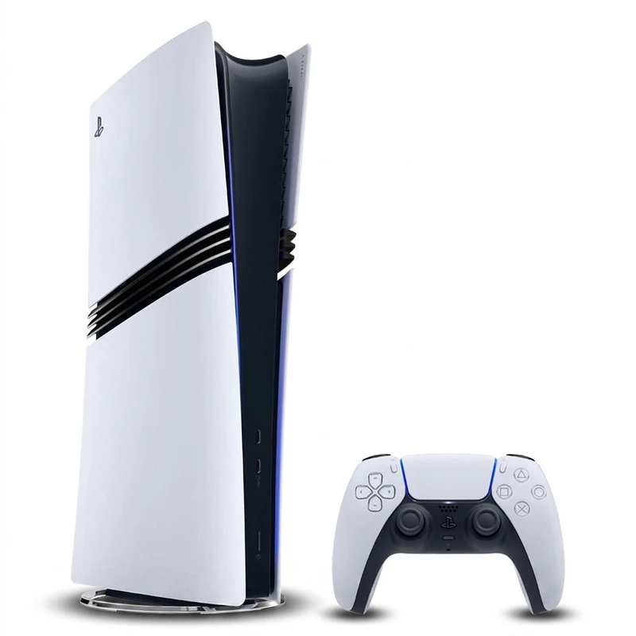
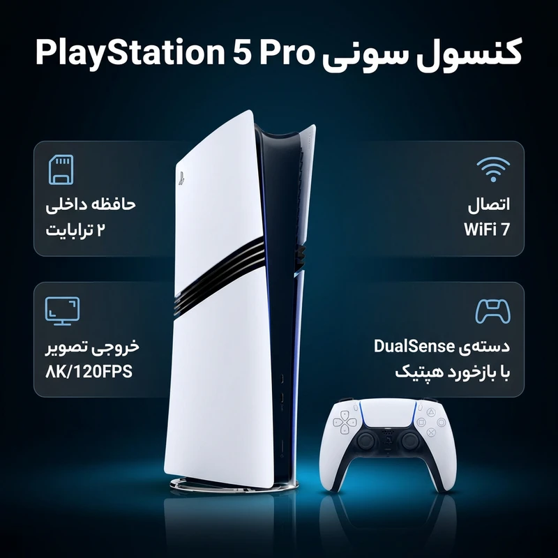

PLAYSTATION5 PRO

.png)

ویژگیها:
- تعداد کنترلر همراه:یک عدد
- نوع کنسول:دیجیتال
- نسل کنسول:نسل نهم
- فناوریهای ارتباطی:بلوتوث و Wi-Fi
- ریجن:اروپا
- نسخه بلوتوث:5.1
- WIFI:7
معرفی:
پلیاستیشن 5 پرو (PlayStation 5 Pro) نسخهای قدرتمندتر از کنسول نسل نهمی سونی است که برای گیمرهای حرفهای و علاقهمندان به بالاترین سطح کیفیت گرافیکی طراحی شده است. این مدل با ارتقاء سختافزاری قابل توجه، تجربهای پیشرفتهتر از نسخه استاندارد ارائه میدهد. پردازنده گرافیکی قویتر با معماری RDNA 3 و توان پردازشی بالاتر، امکان اجرای بازیها با وضوح 4K پایدارتر، فریمریت بالاتر و حتی پشتیبانی از خروجی 8K را فراهم میکند. PS5 Pro همچنین از فناوری پیشرفته رندرینگ مانند Ray Tracing بهره میبرد که موجب نورپردازی و بازتابهای واقعگرایانهتر در بازیها میشود. حافظه داخلی 2 ترابایتی SSD با سرعت بالا، زمان بارگذاری را به حداقل میرساند و فضای کافی برای نصب بازیهای حجیم فراهم میآورد. طراحی این مدل کمی بزرگتر و خشنتر از نسخه اسلیم است و با تهویه بهبود یافته، سیستم خنککننده قدرتمندتری دارد. پلیاستیشن 5 پرو گزینهای ایدهآل برای کاربرانی است که به گرافیک بالا، روانی بازی و آمادهبودن برای آینده بازیها اهمیت میدهند. این کنسول نمایانگر اوج تکنولوژی بازی در نسل نهم است.
بررسی تخصصی:
قدرت بیشتر، تجربهای روانتر
کنسول پلیاستیشن 5 پرو، جدیدترین و قدرتمندترین عضو خانوادهی پلیاستیشن 5 سونی است که به عنوان یک ارتقای میاننسلی، با هدف ارائهی تجربهای بهبودیافته از نظر گرافیکی و عملکردی برای علاقهمندان و کاربران حرفهای طراحی شده است. این کنسول بدون شک بهترین دستگاه پلیاستیشن 5 موجود در بازار است و پیشرفتهای آن، سطح جدیدی از غوطهوری و زیبایی بصری را به بازیها میآورد، در حالی که عملکرد روانتر و نرخ فریم پایدارتری را نیز ارائه میدهد.
قیمت:۳۸۸,۲۶۶,۳۰۰
۳۵۷,۲۰۵,۰۰۰